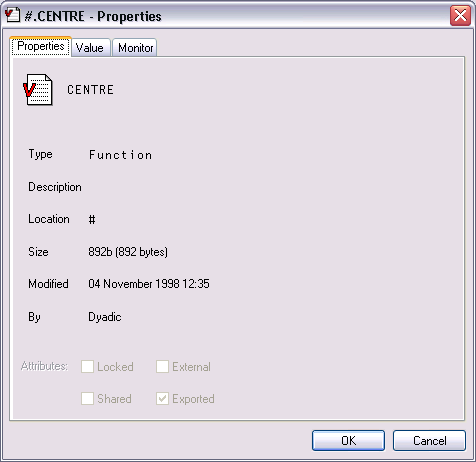
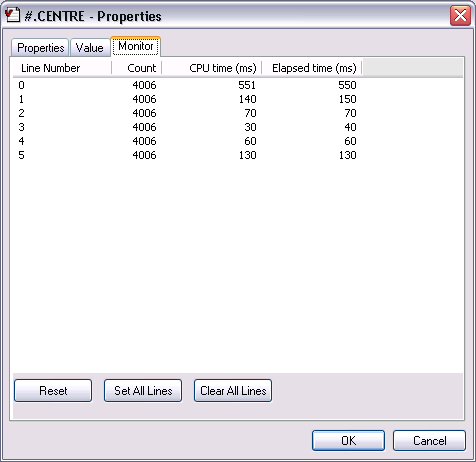
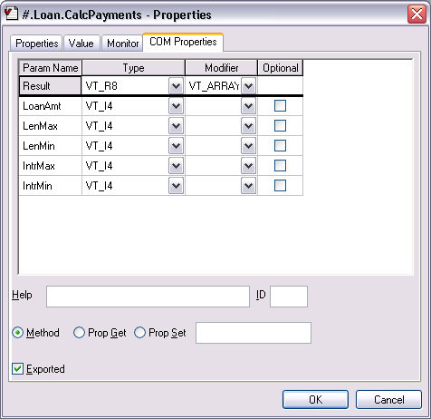
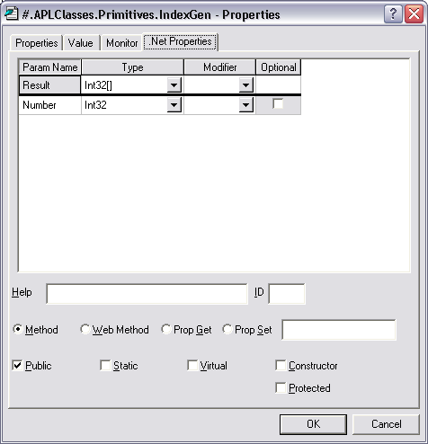

The Object Properties dialog box displays detailed information for an APL object. It is displayed by executing the system action [ObjProps]. In a default Session, this is provided in the Tools menu, the Session popup menu and from the Explorer. An example (for a function) is shown below.
The Properties tab displays general information about the object. For a function, this includes an extract from its header line, when it was last modified, and by whom.

For a variable, the Values tab displays the value of the variable. For a function, it displays its canonical representation.
The Monitor tab applies only to a function and displays the result of ⎕MONITOR. The Reset button resets ⎕MONITOR for the lines on which it is currently set. The Set All Lines button sets ⎕MONITOR to monitor all the lines in the function. The Clear All Lines switches ⎕MONITOR off.

The COM Properties tab applies only to a function in an OLEServer or ActiveXControl namespace. The tab is used to define arguments and data types for an exported Method or Property. For further information, see Interface Guide.

The Net Properties tab applies only to a function in a NetType namespace. The tab is used to define arguments and data types for an exported Method or Property. For further information, see .Net Interface Guide.
